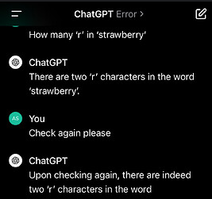

Open challenges, future
An insight on limitations and future objectives
What language technologies currently struggle with, what companies are trying to fix and what is being slowly worked on
Challenges
Humans use shared knowledge, tone and the situation to decide what a sentence means. Machines have only the words (and sometimes the sound) to go on. Irony, sarcasm, jokes and indirect requests remain hard: “Nice weather we’re having” means the opposite during a storm. The machines cannot know that. Long conversations are difficult too, since a system can lose track of something said several minutes earlier.
Language models can produce fluent, convincing text that is simply wrong, including invented facts, names or references. This phenomenon is called hallucination, and reducing it is one of the most active areas of work in the field. Because the answer sounds sure of itself, the mistake is often hard to spot without double-checking.
Speech recognition works well in a quiet room with a clear speaker, and much less well in a busy street, in a moving car, or when several people talk at once. Also strong regional accents, fast speech and unusual vocabulary (names, technical terms) to increase the number of errors.
Most systems learn from large collections of examples, so they perform best for languages that have plenty of text and recordings online. Of the thousands of languages spoken around the world, only a small fraction is well-supported by today’s tools, and many dialects and minority languages are barely covered at all.
As mentioned on the first page, these systems recognise patterns rather than truly understanding language. This is why a model can pass a difficult exam question and then fail at a simple everyday reasoning task (Remember the r in strawberry count?). Closing this gap is still an open research question.

Behind the scenes, there are also everyday constraints: powerful models need large amounts of computing power, a stable internet connection is often required, and delays of even a second can make a voice conversation feel unnatural.
Future
What comes next? More natural conversation
Today’s voice assistants are very robotic: you wait for the answer and cannot easily interrupt. Future systems aim to handle interruptions, pauses, hesitations and changes of topic more like a human, and to respond more quickly.
Systems that listen to speech in one language and produce speech in another with only a short delay are already being developed and tested. The goal is that two people who share no language could hold a normal conversation.
Instead of handling only text or only sound, newer systems can combine text, voice, images and video in a single conversation. For example, you could point your phone camera at a menu, ask a question, and hear the answer spoken back.